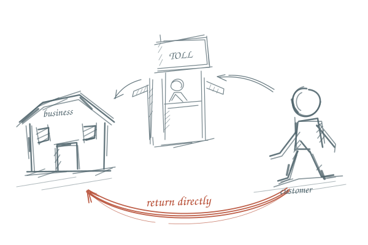
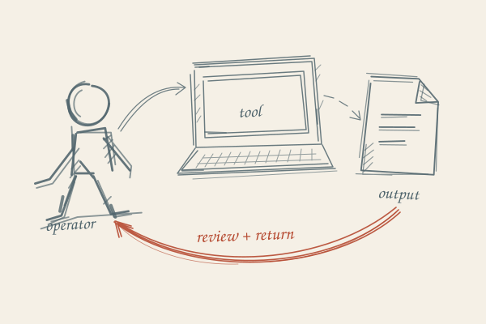

Working-paper marks.
Study 03: broken contours, overlapping pencil strokes, open corners, and selective cross-hatching. The same hand carries from a small mark to a complete business relationship.
Draft for review. The locked EP006 illustration remains the visual reference.
Small marks
Pencil studies.
Broken contours, retraced edges, and small areas of hatching. Oxide identifies an active decision or owned route.
Editorial accents
Working-paper fragments.
Loose actors, annotated relationships, and one oxide path. No episode facts, calculations, or evidence claims live in these supporting drawings.


Scale
Room for the stroke.
Use marks at 40px or larger, with a visible text label. At hero scale, rebalance the line weights. Below 40px, use text alone.
Use and rejection
The drawing can be loose. The evidence cannot.
Orientation notes inside illustrations may be handwritten. Evidence, sources, status, controls, and load-bearing numbers remain typeset. Reject closed geometric perfection, fake notebook props, decorative oxide, and generic startup symbols.